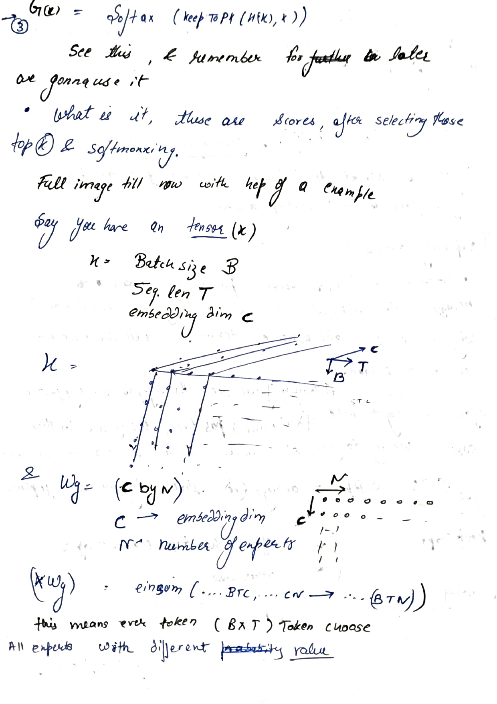
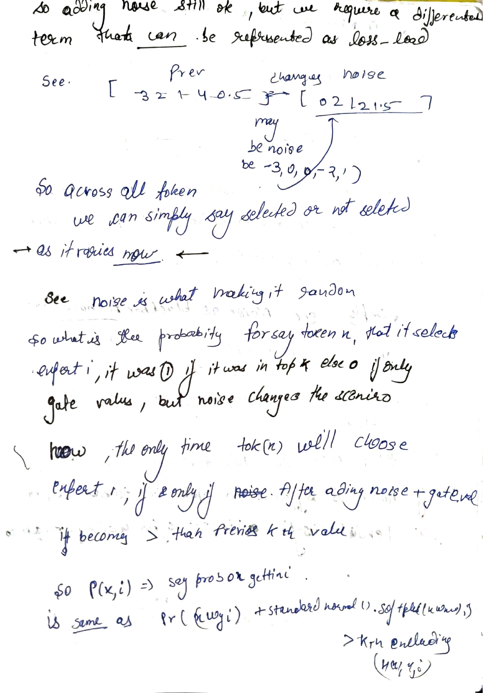
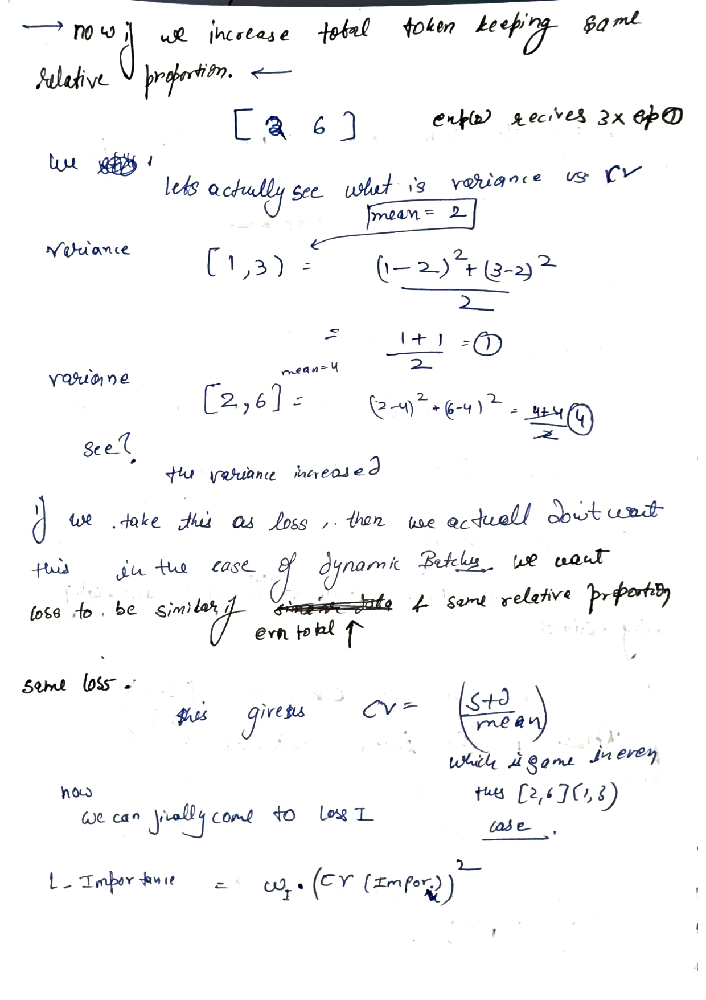
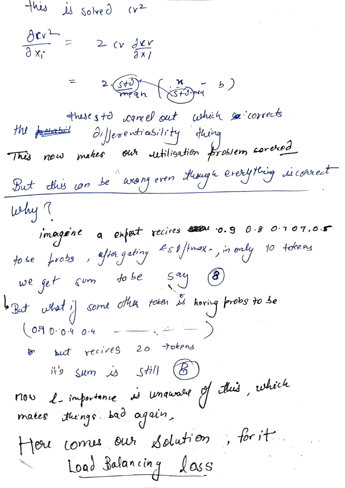
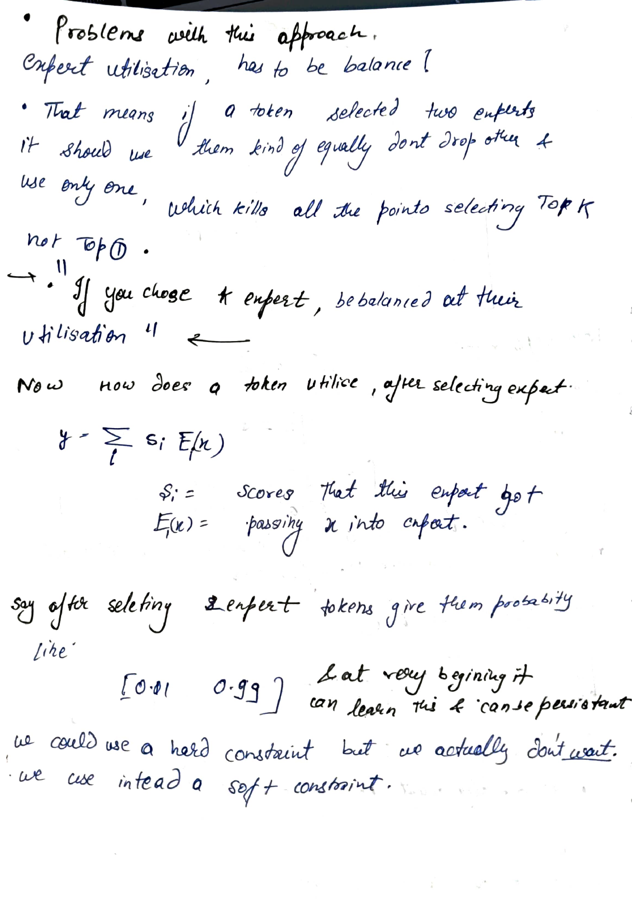
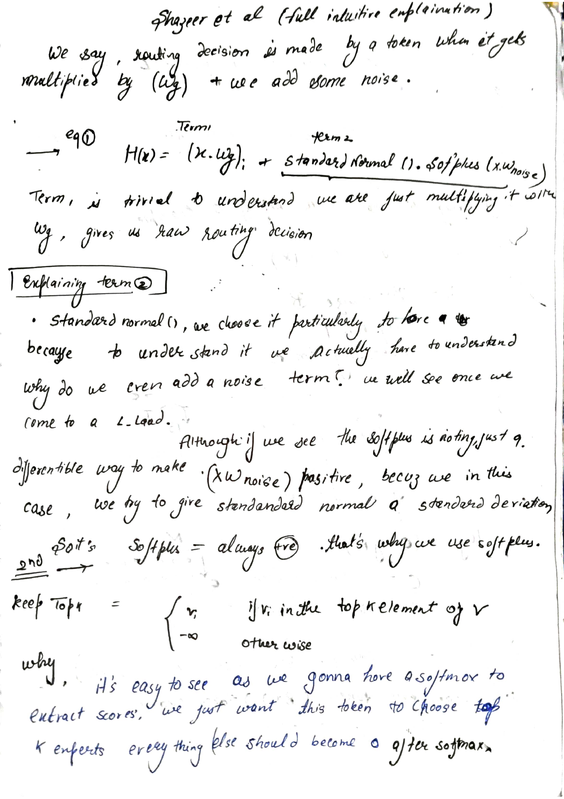
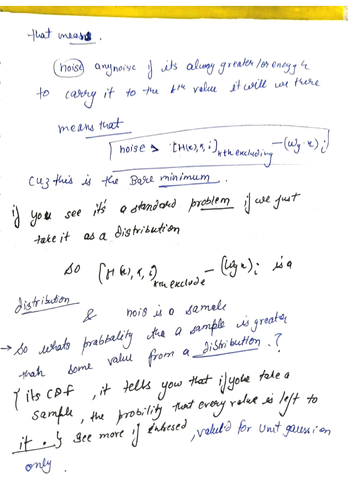

I sat down with the sparsely-gated mixture-of-experts paper wanting to actually understand the gating equation end to end, not just recognize it. It's a small equation, fits on one line, but every piece in it is doing specific work: a linear score, a masking op, a softmax, and, buried in the middle, a noise term that looked unnecessary on first read.
This is that walkthrough, term by term, in the order I actually worked through it, mistakes included, because the order matters more than the destination. Along the way I had to work out why the noise is there at all, which turned out to be its own small detour through discrete masks, a variance identity, and a derivative that refuses to exist at the boundary.
Every term in that first equation earns its place. This walks through why, piece by piece, top-k, the softmax, and yes, the noise too.
Say you have a token, represented as a vector $x$. You have $N$ experts sitting around, and you want the token to decide which few of them are worth its compute. The most naive thing you could do is learn a matrix $W_g$ of shape $(C \times N)$, where $C$ is the embedding dimension, and just compute
The first term is trivial. It's just $x$ multiplied by $W_g$, and it gives you a raw routing decision, one scalar per expert, telling you roughly how much that expert "wants" this token. Nothing clever there. The interesting part, and the part I initially wanted to skip past, is term two.
A standard normal sample multiplied by Softplus(x · W_noise). At first glance the softplus looks like it's doing nothing, it's just a smooth way to make (x · W_noise) positive, because in this setup we're using it as a standard deviation, and you can't have a negative standard deviation. So softplus is always positive, and that's the whole reason it's there.
What this term is really doing is giving the standard normal a learned standard deviation. The network gets to decide, per token and per expert, how much randomness to inject into its own routing decision. Why it would ever want to do that is the real question, and it only makes sense once you've hit the wall in section 4.
Once you have this noisy score $H(x)$, you don't route to every expert, that would defeat the entire point of a mixture of experts, which is to spend compute on only a handful of specialists per token. So you define a masking operation:
The reason it's $-\infty$ and not just $0$ is that the next step is a softmax. If you send $-\infty$ into a softmax, $e^{-\infty} = 0$, and that expert contributes nothing to the output, cleanly, not approximately. Everything that survives the top-k cut gets to fight it out in the softmax; everything else is annihilated before it can.
$G(x)$ is what you actually use. It's a probability distribution over experts, but a sparse one, exactly $k$ nonzero entries, everything else stone dead. If $G(x)_i = 0$, there's no need to ever run $E_i(x)$, that's where the actual compute saving comes from, not just a mathematical nicety.
A concrete example makes this land. For a single token with raw scores $[8.0,\ 3.0,\ -\infty,\ -\infty]$ after masking to $k=2$:
After softmax, experts 1 and 2 get real positive weight, and experts 3 and 4 get exactly zero, not approximately zero, exactly zero, because $e^{-\infty}$ is exact.
I kept losing track of what shape everything was while reading the paper's appendix, so I forced myself to draw it out with an actual tensor before going further. Say you have an input tensor $x$ with:
so $x$ has shape $(B, T, C)$. The gate weight matrix $W_g$ has shape $(C, N)$ where $N$ is the number of experts. Multiplying $x \cdot W_g$ is an einsum contracting the shared $C$ dimension:
x : (B, T, C)
W_g : (C, N)
x @ W_g : einsum('btc,cn->btn', x, W_g) -> (B, T, N)which means every single token, and there are $B \times T$ of them, ends up with a length-$N$ vector, one raw score per expert. That's the object we then add noise to, mask with keep-top-k, and softmax.

Concretely, if $k = 2$, then for a single token you might get a raw score row like
after masking, and softmaxing that gives you
Two experts get a real weight, everyone else gets exactly zero. That's the routing decision for that token.
This is where I got stuck for a while, and it's the whole reason the noise term exists, so it's worth being slow about it.
The number of tokens each expert receives, or equivalently the fraction of tokens each expert gets, is discrete. You can't directly add it as a loss term, because it's basically a step function: expert $j$'s share is $\frac{n_j}{\text{total}}$, where $n_j$ is a count. Discrete, non-differentiable functions like counts don't have a gradient with respect to the routing weights, gradient descent literally cannot see them.
Discrete functions are not differentiable. Gradient descent can't optimize what it can't measure a slope of.
And it's not just the count that's the problem, the gate itself is discrete before we even get to counting anything. The probability that expert $i$ is selected by token $x$ is exactly $1$ if it's in the top-$k$, and exactly $0$ if it isn't. That's a step function too, deterministic, and non-differentiable at the boundary between "in" and "out." A tiny nudge to the routing weights either doesn't change the selection at all (gradient is zero), or it flips the selection entirely (gradient is undefined), there's no smooth in-between.
A step. No slope anywhere except a spike at the boundary.
A smooth curve. Differentiable everywhere.
That single sentence is the entire justification for section 1's noise term. It's not there to regularize anything or to add some vague "exploration." It's there because a deterministic step function has no gradient, and a probability of a step function crossing a random threshold does.
Here's the mechanism. Currently, "is expert $i$ in the top-$k$" is a hard yes/no. To make this probabilistic we inject a random normal draw into the gate value before the top-k comparison happens:
Once you add this, you genuinely cannot say in advance whether the previous top-$k$ experts are still going to be selected, the noise might tip somebody in or out. That unpredictability is exactly the point: it converts a hard boundary into something you can ask a probability question about.

So what is that probability, exactly? For token $x$, expert $i$ gets selected if and only if, after adding noise, its gate value clears the $k$-th largest value among all the other experts' gate-plus-noise values. Call that $k$-th largest threshold $(H(x), k, i)_{\text{excluding } i}$. Then expert $i$ makes it in exactly when:
This is now a completely standard question: "given a distribution, what's the probability a sample from it exceeds some threshold?" That's exactly what a CDF answers. Since our noise is a zero-mean unit Gaussian scaled by softplus, we can normalize the threshold back to unit-Gaussian units and read the probability straight off the CDF:
where $\Phi$ is the standard normal CDF. This is the payoff. $P(x,i)$ is smooth in every one of its inputs, $W_g$, $W_{noise}$, the threshold, all of it, because a CDF is a smooth function. We took something with a wall in it (in/out, 1/0) and replaced it with a continuous probability that a random sample clears a wall. Backprop can flow through this cleanly.
Okay, so noise buys you a gradient. It does not, by itself, buy you a good router. Here's the failure mode I ran into next.
Say a token selects two experts. If it always uses the same two, equally, every time, that kills the entire premise of choosing top-$k$ instead of top-$1$. You wanted diversity of routing; you got two experts locked in a tight orbit around each other while $N-2$ experts starve.
If you choose k experts, be balanced at their utilisation.
How does a token actually make use of an expert, once selected? It's a weighted sum:
where $s_i$ is the gate score that expert $i$ got (from $G(x)$), and $E_i(x)$ is just the expert's own forward pass on $x$. Now imagine the gate keeps handing out scores like $[0.01,\ 0.99]$ for two selected experts, and it can learn this pattern very early and it becomes self-reinforcing, the expert that starts slightly ahead gets more gradient signal, gets better, gets picked more, gets even more signal. A hard constraint could stop this, but we don't want a hard constraint here, we want a soft constraint, something we can add to the loss and let gradient descent handle organically.
The quantity we actually care about is how "important" each expert is across an entire batch. Define, for expert $x$ (overloading notation slightly, following the paper):
sum the gate score that expert got across every token $n$ in the batch. For the whole layer to be well-balanced, every expert should end up with roughly similar importance: low variance, ideally, and definitely not one runaway expert with high importance while everyone else starves.
The obvious first instinct is: penalize the variance of the importance vector. I tried this and immediately found the reason it's the wrong tool. Consider two toy distributions of "tokens received":


Take $[1, 3]$: mean is $2$, variance is $\frac{(1-2)^2 + (3-2)^2}{2} = 1$. Now scale everything up while keeping the exact same relative proportion, expert 2 always receiving 3x what expert 1 receives, say $[2, 6]$: mean is $4$, variance is $\frac{(2-4)^2+(6-4)^2}{2} = 4$.
The variance quadrupled even though the actual imbalance, the ratio between the two experts, didn't change at all. If we use variance as a loss, then simply having more total tokens flowing through the same, evenly-proportioned system produces a bigger loss for no real reason. In the dynamic-batching setting this is a real headache, because batch sizes vary constantly and we don't want the loss magnitude to swing around just because of that. We want the loss to track relative imbalance, not absolute scale.
The natural fix is the coefficient of variation:
Check it against the same two cases: $\text{CV}([1,3]) = \frac{1}{2} = 0.5$, and $\text{CV}([2,6]) = \frac{2}{4} = 0.5$. Identical. Scale-invariant, exactly as wanted, same relative proportions give the same loss regardless of total token count.
The paper's actual importance loss uses $\text{CV}^2$, not raw CV, and this is where I had to sit down and actually differentiate the thing to understand why, because on the surface CV already looked fine to me.
Start from $\text{std}^2 = \frac{1}{N}\sum_j(x_j-\text{mean})^2$ and differentiate both sides, remembering $\partial\,\text{mean}/\partial x_i = 1/N$:
That bracketed second piece looks messy, but the deviations from the mean always sum to zero across the whole set, $\sum_j (x_j-\text{mean}) = 0$, always, by definition of the mean. Once you fold that identity in, the $\left(1-\frac1N\right)$ term and the leftover $-\frac1N\sum_{j\neq i}$ term collapse into a single clean $\frac1N$:
Then CV's derivative falls out from the quotient rule, $\text{CV}=\text{std}/\text{mean}$:
Look at where std sits in that expression, in the denominator. That's the problem. As the distribution approaches perfect balance, std → 0, and this derivative blows up: division by a quantity heading to zero. Right exactly at the point we want the optimizer to settle into, perfect balance, the gradient is either undefined or numerically explodes into floating point garbage. That's a nasty place to have a singularity, because it's precisely the target you're trying to reach.
Now differentiate $\text{CV}^2$ instead, using the chain rule on $\text{CV}^2 = (\text{CV})^2$:
The std in the denominator of $\partial\text{CV}/\partial x_i$ meets the extra std that the outer chain-rule factor of $\text{CV}=\text{std}/\text{mean}$ brings in. In the first term they cancel completely, leaving $2(x_i-\text{mean})/(N\cdot\text{mean}^2)$, no std anywhere, finite everywhere. In the second term you're left with std² instead of std in the numerator, and a squared quantity going to zero is perfectly smooth, it just approaches $0$, it doesn't blow up or leave anything undefined. Either way, nothing in $\partial\text{CV}^2/\partial x_i$ divides by std anymore. Squaring isn't cosmetic here, it's the thing that repairs a genuine non-differentiability at the point that matters most.

std term cancel out of the derivative.
Even with the importance loss fixed and finite everywhere, it can still be satisfied while something is quietly wrong underneath. This is the part of the derivation that actually surprised me the most, because it means importance alone is not a complete fix.
Imagine expert A receives softmax-normalized gate probabilities like $[0.9, 0.8, 0.7, 0.7, 0.5, \ldots]$ across only 10 tokens, summing to, say, $8$. Now imagine expert B receives probabilities like $[0.4, 0.4, 0.4, 0.4, \ldots]$ but across 20 tokens, and its sum also comes out to $8$.
Importance is identical for both. But the underlying situation is completely different: expert A is being chosen decisively by a few tokens, expert B is being chosen weakly by twice as many. Importance, being a simple sum, is blind to this distinction, it can't see how many tokens contributed or how confidently. This is exactly where things quietly go wrong again, and it's why the paper introduces a second, separate loss: load balancing.
Load fixes this by going back to the smooth selection probability we derived in section 5, $P(x, i)$, and summing it properly per expert, rather than summing the post-softmax gate scores:
Every probability, summed, and, because $P(x,i)$ is built from that CDF construction in section 5, perfectly differentiable, meaning clean backprop, no discrete counting anywhere in sight. Then the exact same reasoning from section 8 applies again, for exactly the same reason (scale invariance, and a well-behaved gradient at the balance point):
And the total auxiliary loss the paper adds alongside the task loss is simply the sum of both, each weighted by a small coefficient:
I wanted to actually watch what noise does to a top-k decision instead of just trusting the algebra, so here's a tiny simulation: 8 toy experts, adjustable noise scale, adjustable $k$. Increase the noise and watch how often the selected set changes between draws for the exact same underlying gate scores.
Notice: as $\sigma$ increases from $0$, the selection starts flipping even though the underlying raw scores (the red ticks) never move. That flipping is the randomness that makes the CDF story in section 5 meaningful, without it, "probability of being selected" would just collapse back to a deterministic $0$ or $1$, and we'd be back where we started.
Stringing it all together, back to $G(x)$ from section 2:
Every piece exists because of the piece before it. Noise exists because hard top-k has no gradient. The softplus exists because noise needs a non-negative, learnable scale. The CDF exists because "probability of clearing a random threshold" is the smooth stand-in for a step function. CV exists because raw variance is scale-dependent and useless across varying batch sizes. The square exists because CV alone has a gradient singularity exactly at the point of perfect balance. And load exists as a separate term because importance, being built from post-softmax scores, is blind to how many tokens actually contributed to that sum.
None of it is decorative. That was the actual lesson for me, every term in that first ugly-looking equation earns its place, and you can't see why until you've hit the specific wall it was built to route around.
A few more pages from the actual notebook, kept here because the progression across them is the real record of how this was worked out, not a cleaned-up version after the fact.


![]()